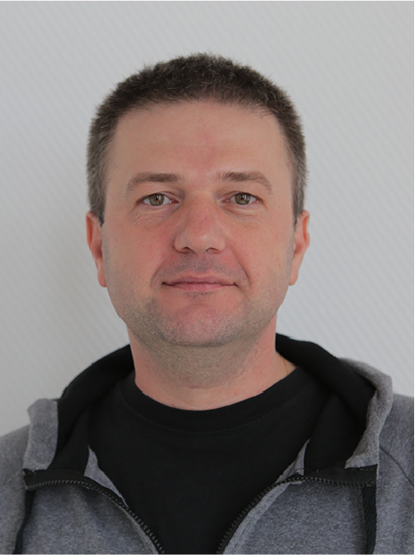

Dzmitry Vasilkou CV
Dzmitry Vasilkou

Summary
I'm a very motivated to take a succeed in Front-End technologies.
skills
- web: HTML5, CSS3, Java Script (ES6), SASS, SCSS, LESS
- technologies: git, gulp, webpack, node.js
- JS frameworks: Base knowledges of React/Angular/Vue
- multimedia: Figma, Avocode, Zepplin, Adobe Photoshop, Adobe Audition, DAVid
portfolio


education
BSPA [now BNTU];
certificates of it.academy in FD1:
html/css in (2017)/ FD2:
js (2018); some other relevant internet courses
language-skills
Sometimes I realize that I need more practice / time to learn better and improve my level of knowledge, but the reality is strong and I still try to keep up with the average and above average. So i think it pre-intermediate (A2+).